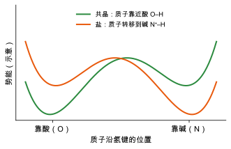
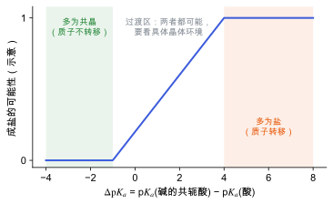

质子归属：盐与共晶
酸碱分子晶体里质子停在哪一侧（盐还是共晶），怎样判断，以及它对结构和性质的影响。
直观阅读需要
- 酸碱与 pKa
- 氢键
完整推导还需要
- 分子晶体与分子间作用
- 能量景观与多晶型 中的双势阱
只是提示，不需要先读完才能往下看。
直觉直观解释
酸 A–H 和碱 B 在晶体里通过氢键 A–H···B 相连。质子有两种去处：
- 留在酸上：A–H···B，两个中性分子，称为共晶 (cocrystal)；
- 转移到碱上：A⁻···H–B⁺，一对离子，称为盐 (salt)。
同一个分子内部也可以发生这件事。氨基酸在晶体中通常以两性离子 (zwitterion) 形式存在：羧基的质子转移到氨基上，成为 \mathrm{NH_3^{+}} 和 \mathrm{COO^{-}}。甘氨酸晶体就是这样（领域共识）。
质子位置决定了电荷分布，所以它直接影响偶极、氢键强度、玻恩有效电荷，进而影响介电与压电响应。质子放错，后面所有的计算都建立在错误的结构上。

| 符号 | 是什么 | 图里对应 |
|---|---|---|
| 横轴 | 质子在供体和受体之间的位置 | 左端靠酸 O，右端靠碱 N |
| 纵轴 | 质子的势能（其他原子固定） | 两条曲线 |
| 绿线 | 共晶情形：较深的阱在酸一侧 | 左侧极小点更低 |
| 橙线 | 盐情形：较深的阱在碱一侧 | 右侧极小点更低 |
经验规则与连续过渡数学与推导

| 符号 | 是什么 | 图里对应 |
|---|---|---|
| \Delta\mathrm{p}K_a | 碱的共轭酸与酸的 pKa 之差 | 横轴 |
| 成盐的可能性 | 统计上成盐的比例 | 纵轴 |
| 绿色区 | 多为共晶 | 左侧 |
| 橙色区 | 多为盐 | 右侧 |
| 中间区 | 两者都可能 | 中段的过渡 |
这条规则用的是溶液中的 pKa，而晶体环境（周围的氢键、静电场、堆积方式）会改变质子转移的能量。所以在中间区，同一对酸碱可能形成盐、共晶，或者质子位置处于两者之间。Childs 等人把这种情况称为盐–共晶连续过渡 (salt–cocrystal continuum)，并指出质子位置受晶体结构影响 [Childs et al. 2007]。
怎样判断质子在哪里对应与边界
- 实验：X 射线衍射对氢原子不敏感，质子位置常有较大不确定性。中子衍射直接定位氢核；固体 NMR 和红外光谱也能区分。间接判据是羧基的两个 C–O 键长：中性 \mathrm{COOH} 中一长一短，\mathrm{COO^{-}} 中接近相等。
- 计算：分别从两种质子位置出发做结构优化，比较能量；或沿氢键扫描质子位置。注意半局域泛函（如 PBE）的离域误差可能偏向质子在氢键中部的结构，结果最好用更高级别方法或实验核对（这是常见的担忧，具体偏差大小因体系而异，属于需要在本体系中检查的推断）。
- 核量子效应：轻的质子有显著的零点运动，在双势阱势垒较低时，经典的“停在哪一侧”可能不再是好的描述。
在本研究线里的样子对应与边界
- β-甘氨酸：分子是两性离子，质子在氨基上。从 CIF 建模时，要确认氢原子都在，并且是 \mathrm{NH_3^{+}}/\mathrm{COO^{-}} 形式。如果 CIF 缺氢或氢位置是推算的，先优化氢原子位置。
- 对压电的影响：两性离子的电荷分离让分子偶极很大，氢键网络中的 \mathrm{N\!-\!H\cdots O} 也是软而带电的模式。它们共同影响玻恩电荷和内应变项（见 介电张量与玻恩有效电荷、压电张量）。
- 向外迁移：若把研究扩展到氨基酸与其他酸碱的共晶或盐，质子归属是首先要确定的结构问题。
常见坑对应与边界
- 信任 CIF 中的氢位置：X 射线结构中的氢常是按几何规则放置的，不一定是实测。
- 只算一种质子形式：在 ΔpKa 中间区，两种形式都要算。
- 溶液 pKa 直接外推：规则是统计的，不是对单个体系的预测。
检验自己对应与边界
参考资料
论文Cruz-Cabeza 2012
A. J. Cruz-Cabeza, Acid–base crystalline complexes and the pKa rule, CrystEngComm 14, 6362 (2012)
尚未实际查阅，目前只是拟查阅书目
论文Childs et al. 2007
尚未实际查阅，目前只是拟查阅书目
分类晶体与固体 · 概念 · 研究线：压电与响应计算 · 状态：草稿